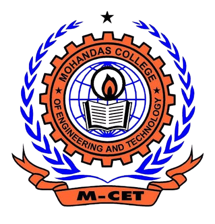

Mohandas College of Engineering and Technology is situated in Nedumangad in Kerala State of India and was established in 2002. The college is approved by AICTE and affiliated to APJ Abdul Kalam Technological University and is accredited with NAAC-A Grade. Mohandas College of Engineering and Technology offers 15 courses which include B.Tech, M.Tech, MCA, MBA and Hotel Management. Besides a robust teaching pedagogy, Mohandas College of Engineering and Technology is also a leader in research and innovation. Focus is given to activities beyond academics at Mohandas College of Engineering and Technology, which is evident from its infrastructure, extracurricular activities and national & international collaborations. The placement at Mohandas College of Engineering and Technology is varied, with recruitment options both in corporates and public sector as well as in entrepreneurship